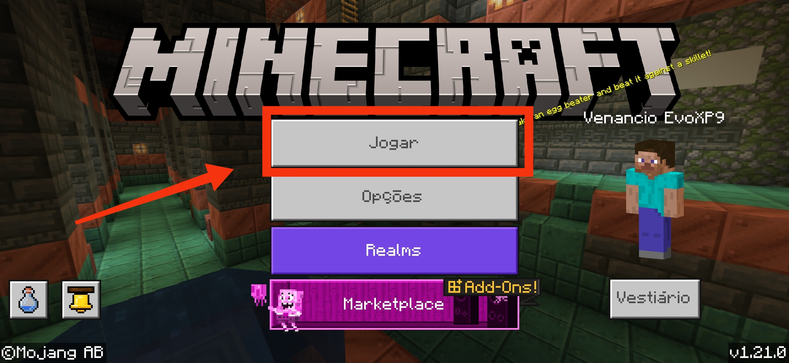
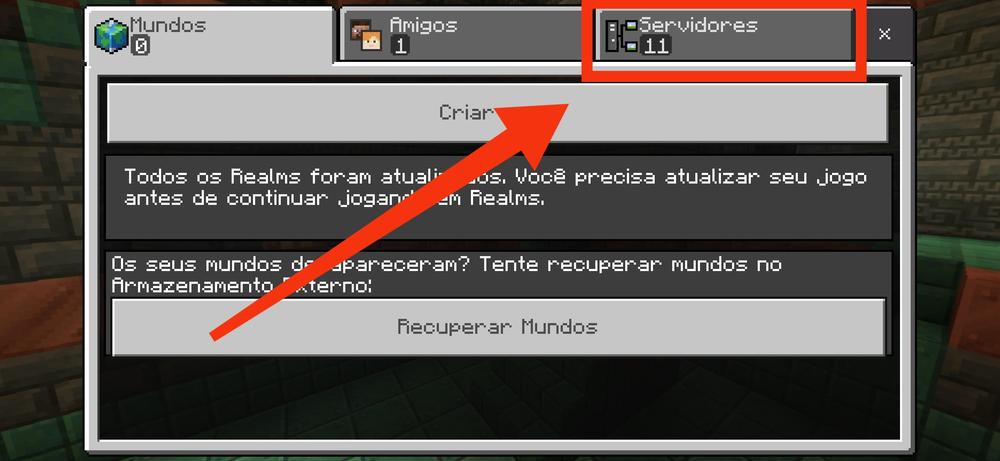
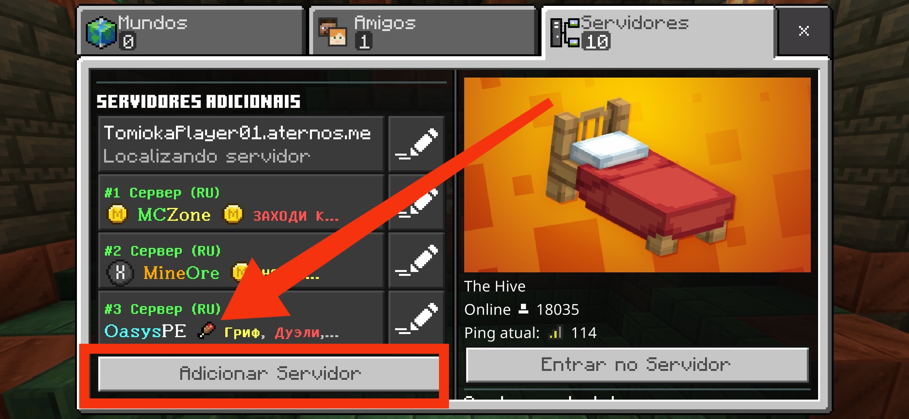
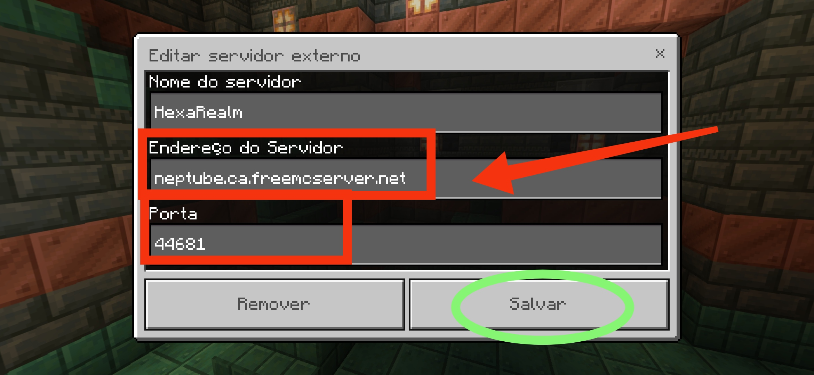

Bem-vindo à nossa comunidade de Minecraft! O servidor "HexaRealm" oferece uma experiência única de jogo com uma variedade de recursos e eventos para todos os jogadores. Nossos membros desfrutam de um ambiente amigável e divertido, com suporte constante para garantir uma jogabilidade de alta qualidade. O servidor está em sua primeira fase, portanto apresse-se para ajudar a elevar nossa comunidade dentro do jogo, lembre-se de estar bem equipado e preparado para enfrentar criaturas hostis!
Curiosidades:
O Porque desse nome?
Para jogar no nosso servidor, você precisará da versão compatível do Minecraft Bedrock. Baixe o APK através do link abaixo:
Veja nosso tutorial completo sobre como adicionar o servidor manualmente:
1° PASSO: Certifique-se de ter instalado a versão correta do jogo, Baixar Minecraft PE 1.21.0.03. Após a instalação, acesse o link no final da página, aguarde o redirecionamento e clique em JOGAR.
2° PASSO: Após ter clicado em JOGAR, selecione SERVIDORES no canto superior direito da tela.
3° PASSO: Toque em ADICIONAR SERVIDOR.
4° PASSO: Adicione o endereço e porta especificados em seus respectivos campos dentro do jogo, em seguida clicar no botão "SALVAR". Você pode copiar ENDEREÇO e PORTA logo abaixo:
Já tem domínio sobre o passo a passo? abra o jogo para fazer realizar o procedimento citado e adicionar o servidor "HexaRealm", clique no link abaixo:
Para uma experiência mais completa, crie sua conta Xbox para poder desbloquear o sistema de conquistas e impulsionar sua gameplay. É fácil e intuitivo, clique no link abaixo e informe seus dados para a criação da conta, você receberá um código de confirmação por e-mail e precisará criar sua gamertag (nome de jogador).
Conta criada Xbox criada? Abra seu jogo e procure a opção "Entrar no Xbox", basta você entrar pelo e-mail e senha criados, que nas próximas vezes ao entrar no jogo, sua conta será conectada automaticamente.
Confira nosso tutorial sobre como usar sua conta para gerenciar o servidor:
Tutorial de Gerenciamento do Servidor
Esperamos que você aproveite sua experiência em nosso servidor. Se tiver qualquer dúvida ou precisar de ajuda, não hesite em nos contatar. Divirta-se jogando e bem-vindo à nossa comunidade!